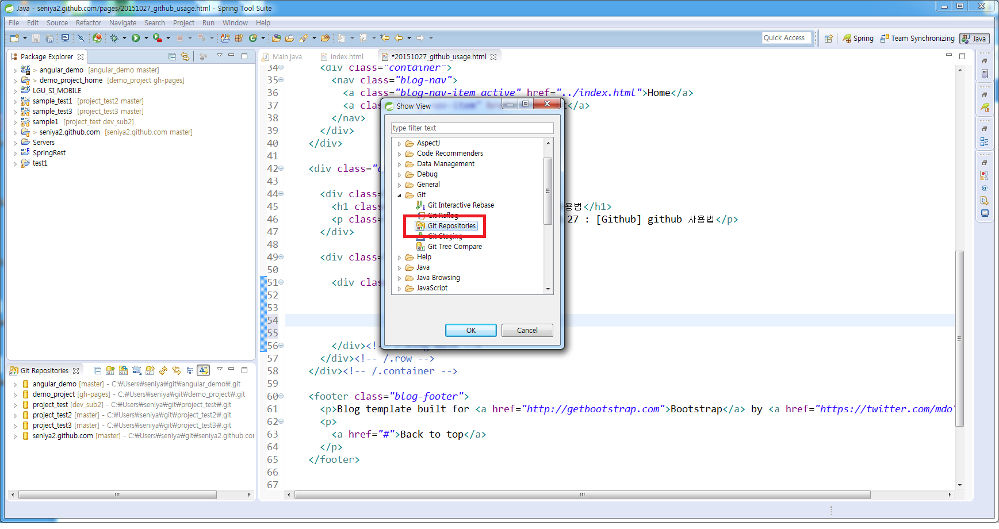
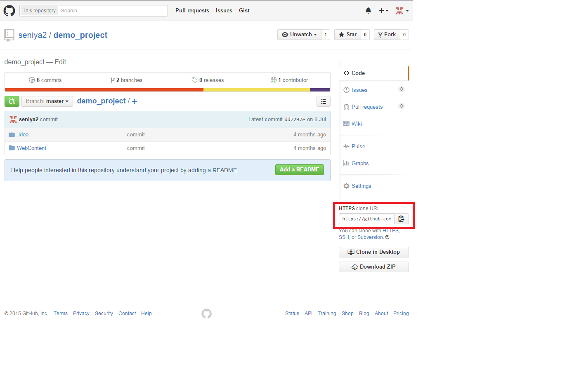
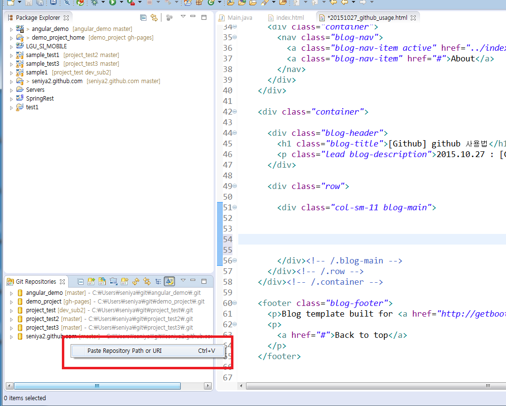
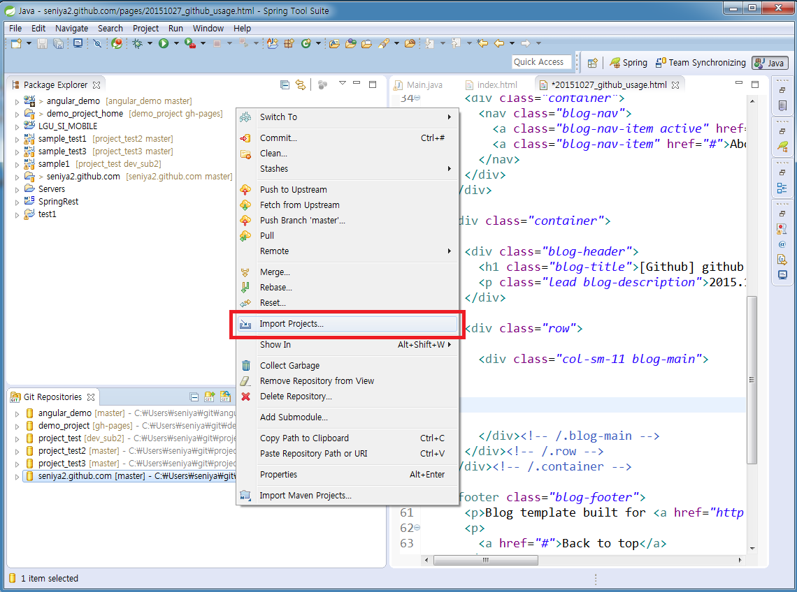

2015.10.27 : [Github] github 사용법
1. GitHub 에서 리파지토리 생성
2. STS 실행. 메뉴 -> Window -> Show view -> Other -> Git Repositories 선택
3. GitHub 사이트에서 Repository URI 복사
4. STS. Git Repositories 창에서 Paste Repository Path or URI 선택 후 진행
5. 생성된 Repository 선택 후 우클릭 -> Import Projects 선택 후 진행



